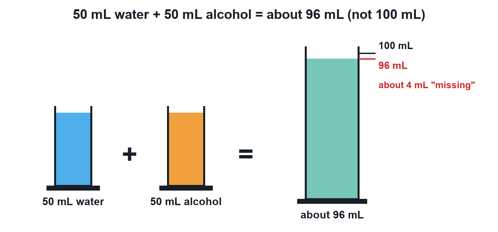
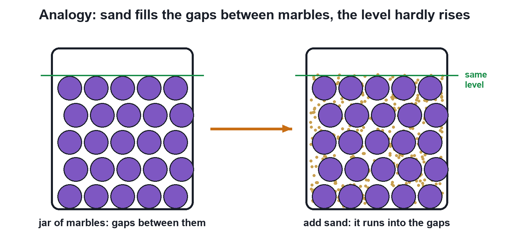
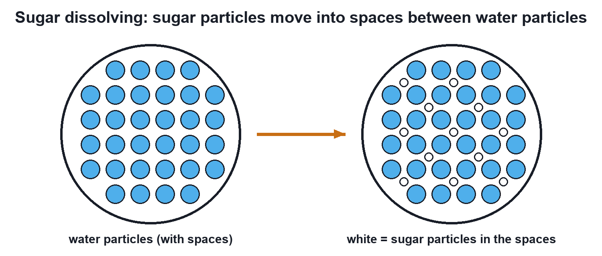
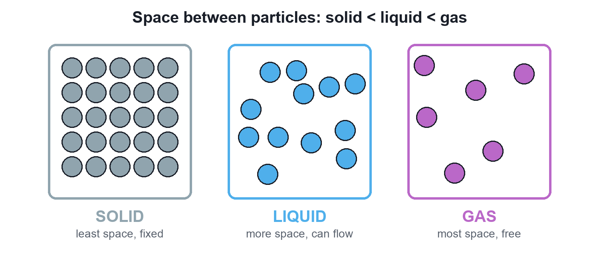

Particles Have Spaces Between Them
50 mL of water plus 50 mL of alcohol gives only about 96 mL. The reason: particles of matter have spaces between them.
Video not playing? Watch it on Instagram · YouTube
03 – Particles Have Spaces Between Them · PDF, 260 KB · solved examples, CBSE practice set and answer key
Key points
- Matter is made of tiny particles with spaces between them.
- When liquids mix, some particles fit into the spaces between others: 50 mL + 50 mL ≈ 96 mL.
- Sugar dissolves because its particles move into the spaces between water particles.
- Space between particles: solid < liquid < gas; gases compress most easily.
The puzzle
Mix 50 mL of water with 50 mL of alcohol (ethanol). You expect 100 mL but measure only about 96 mL. Nothing spilled.

Why it happens
All matter is made of tiny particles, and there is empty space between them. When two liquids mix, some particles of one slip into the gaps between the particles of the other, so the mixture takes up less room.

At Class 9 level the key idea is the spaces; the attraction between water and alcohol particles also pulls them a little closer.
Sugar disappearing in water
Dissolve a spoon of sugar in half a beaker of water: the sugar vanishes and the level hardly changes. Its particles have gone into the spaces between the water particles.

Spaces in solids, liquids and gases

| Property | Solid | Liquid | Gas |
|---|---|---|---|
| Space between particles | Least | More | Most |
| Attraction | Strongest | Moderate | Weakest |
| Compressibility | Negligible | Very little | High |
Quick quiz
4 questions. Choose an answer for each, then submit to see your score and the explanations.